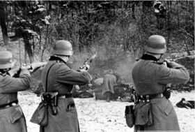

Ko je leta 1914 izbruhnil prvi svetovni požar, je seveda vprašanje, kaj storiti s smrtno kaznijo, stopilo povsem v ozadje. Čas vsesplošnega ubijanja pač ni bilo obdobje, ko bi se kazalo zavzemati za življenje posameznika, zlasti ne za storilca težkega kaznivega dejanja. Časopisje je poročalo o smrtnih kaznih, naglem sodišču, kaznovanju vohunjenja in izdajstva na običajen formalen in redkobeseden način« (Česnik,2004,str.31). Znano je bilo, da je sojenje pred vojaškim sodiščem predvsem stvar rutine, da so bile obsodbe izrečene, pritožbe zavrnjene in kazni izvršene v istem dnevu.
